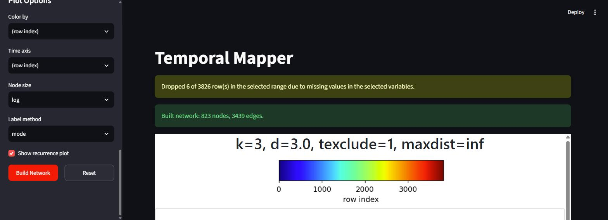
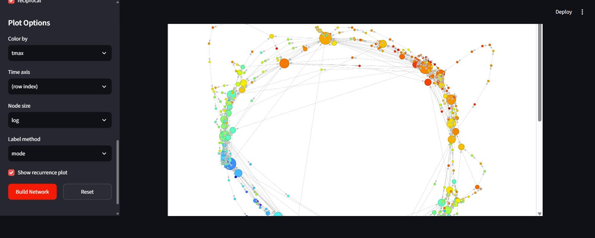
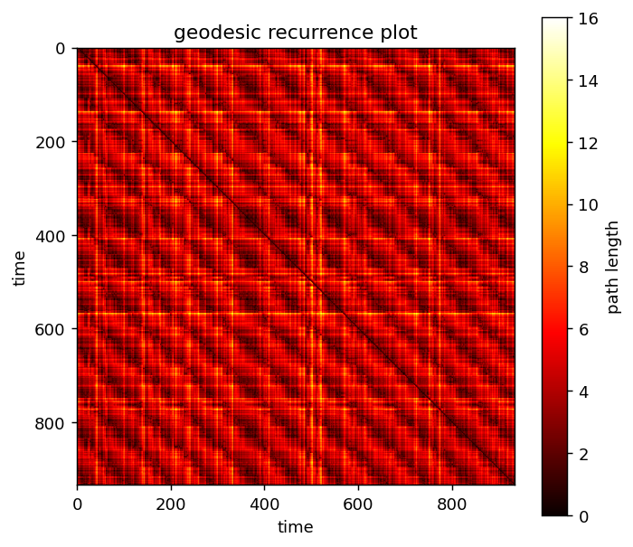

Interactive App¶
The app is a point-and-click front end for the same
tknndigraph → filtergraph → plotting pipeline the
Quickstart walks through in code. Load data, pick variables,
turn the parameters, and explore the resulting network in your browser —
without writing anything.
Everything on the Concepts page about what the parameters mean applies unchanged; this page only covers driving the app.

After a build: the missing-data notice and the result summary, above the plots.

The interactive network, built from the bundled weather data and coloured by
tmax. The seasonal cycle shows up directly as a loop running cold (blue)
through warm (red) and back. Nodes are draggable, the view zooms and pans, and
hovering a node reports its member count and colour value.

Below the network, the geodesic recurrence plot for the same build. The repeating block structure is the same seasonal recurrence that appears as a loop above; bright bands mark times the system had to travel far around that loop to get from one to the other.
Install and launch¶
The app ships with the package, behind an optional extra:
A browser tab opens automatically on localhost:8501. Stop it with Ctrl+C.
tmapper-app passes any extra arguments straight through to Streamlit, so
tmapper-app --server.port 8600 works as you would expect.
From a clone, pip install -e ".[app]" then the same command.
Opening it on another device
Add --server.address 0.0.0.0 and visit http://<your-machine-ip>:8000
from a phone or tablet on the same network. You may need to allow the
port through your firewall.
The sidebar, top to bottom¶
Data¶
Try sample data uses the bundled East Lansing weather CSV, trimmed to the same recent slice as the Quickstart. Upload takes any CSV or TXT.
Only numeric columns are offered as build variables. A leading unnamed column
— pandas' Unnamed: 0, the usual leftover from a to_csv() without
index=False — is dropped automatically, since it is just a monotonic ramp
and would dominate the distance computation if selected.
The bundled CSV is the full historical record
EL_temp.csv holds 57 709 daily rows, and the sample button trims to a
recent slice so the default click stays fast.
The whole file does build. The app uses tknndigraph's low_memory path,
which scans the coordinates a block of rows at a time rather than
allocating the ~27 GB pairwise distance matrix N² would imply — so what
limits a long recording is time, not memory. Every pair is still
compared, so that time grows quadratically: measured on this dataset,
~2.6 s at 16 000 points, ~10 s at 32 000, and ~32 s for all 57 709.
Above 16 000 points the app warns with a rough estimate and builds it anyway. Restrict the row range or turn on downsampling to cut the wait.
Variables & Preprocessing¶
| Control | Effect |
|---|---|
| Variables | Which numeric columns define the system's state. Only numeric columns qualify — distances need real numbers. |
| z-score | On by default. Uses ddof=1, matching MATLAB's convention (see Concepts). |
| start row / end row | Restrict to a window. 0-indexed, following this port's convention — not the MATLAB app's 1-indexed fields. end row accepts last. |
| time index | Which column says who is temporally adjacent. Defaults to row order; pick a column for data with real breaks (separate sessions/trials) or irregular sampling. Combines with downsampling as long as the column is evenly sampled. |
| downsample (N) | Keep every Nth row. A lowpass is applied first — see below. |
| embed lag / embed order | Optional delay embedding. Order 1 skips it. |
Network Parameters¶
k, d, texclude, the two max dist cutoffs, and reciprocal — all
exactly as described in the
Quickstart. max dist
accepts inf.
Plot Options¶
Color by, Colormap, Time axis, Node size, Label method, and whether to show the recurrence plot. Changing any of these re-renders the existing network rather than rebuilding it, so it is cheap to click through them freely once a build has finished.
Color by accepts anything — numbers, dates, or text categories such as
condition, trial, or behavioural state. Categories are treated as purely
nominal labels: they map to integer codes, aggregate per node by majority
vote, and the colormap list switches to qualitative palettes, where adjacent
colours are unrelated rather than a ramp. (Averaging category codes is
meaningless, so mean/median are hidden for them.)
Date columns
MATLAB's readtable turns date strings into datetime automatically —
which is why tmapper_demo.m can use dat.Date straight as its time
axis. pandas leaves them as text, so the app parses them on load. A
Date column therefore works as a time axis or a time index with no
preparation: for daily data it gives one step per day, so genuinely
missing days become real gaps instead of being bridged.
Things handled for you¶
Missing data is handled, not ignored
NaN propagates through z-scoring and then through the entire distance
matrix, so an unremoved gap silently degrades the whole network rather
than failing loudly. The app never lets one through, and reports what it
did.
At stride 1 a row with any missing selected variable is dropped, leaving a
real gap in time. When downsampling, each kept sample is an average over
its window and that average simply skips missing inputs — so an isolated
NaN costs no sample at all, and only a sample whose entire window is
missing is dropped.
Calling tknndigraph directly on data containing NaN raises an error
instead — the scripted API expects you to clean your own data.
Downsampling filters before it strides
downsample (N) > 1 applies a centered rolling mean of width N before
keeping every Nth row. Naively taking every Nth raw sample would alias
high-frequency content into spurious low-frequency structure.
Real gaps stay gaps in time
tknndigraph's tidx argument is what tells the pipeline which samples
are temporally adjacent — it links two points only when their tidx
differs by exactly 1. The app derives tidx from elapsed position rather
than array position, so a genuine break in the data leaves a jump and no
temporal edge is fabricated across it.
Decimation happens on the original row grid, never on the post-removal list. Striding surviving rows would slide every later sample off the true time grid, inventing gaps at samples that were in fact evenly spaced.
A supplied time index column counts raw sampling intervals, so when downsampling it is converted into decimated units — otherwise neighbours would differ by N rather than 1 and no temporal edge would be built at all. Real breaks scale by the same factor. This needs an evenly-sampled column (gaps are fine); a genuinely irregular index has no interval to decimate by, so that combination is refused rather than silently distorted.
Export / share¶
After a build, the Export / share panel offers:
Figures
- Interactive network (
.html) — a fully self-contained page. It stays draggable, zoomable, and hoverable with no Python, no install, and no internet, so it can simply be emailed or dropped in a shared folder. - Recurrence plot (
.png) and Network figure (.png) at 200 dpi. The static network render is behind a checkbox because it re-runs the layout; it uses the same layout routine as the interactive view, so the two agree.
Data for downstream analysis
timeline.csv— one row per retained time point:tidx,source_row,node, plus your chosen color/time columns. This is the join-back table — which attractor was the system in at time t — and is what dwell-time, transition-rate, and occupancy analyses actually need.network.graphml— topology, edge weights, and per-node attributes. Opens in Gephi and Cytoscape, round-trips throughnetworkx.read_graphml.params.json— full provenance: the data source and its loading code, every preprocessing and network setting (including the resolvedmax_neighbor_distand how many rows were dropped), every plot option, and the resulting network's shape.- Everything (
.zip) — all of the above plus the interactive page and areproduce.py.
Why the distance matrices aren't exported
Neither the geodesic recurrence matrix nor D_simp is included. Both are
O(n²) — the recurrence matrix alone is ~120 MB on the sample data — and
both are one line to regenerate from the exported files
(tcm_distance(g_simp, members), and filtergraph's fourth return
value). The exports keep only what cannot be cheaply recomputed.
Show equivalent code¶
The panel below the plots holds a complete, runnable script reproducing the
current build — including the data-loading step and the exact resolved
parameters. This is the bridge back to scripting: explore interactively, then
paste the script into your own analysis once the parameters look right. It is
the same file the ZIP ships as reproduce.py.
What's next¶
- Quickstart — the same pipeline, written out step by step.
- Concepts & coming from MATLAB — what the network means.
- API Reference — every function the app calls.